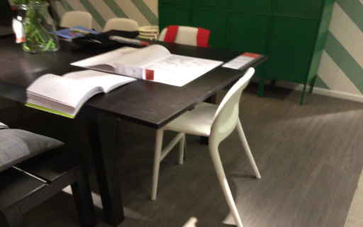
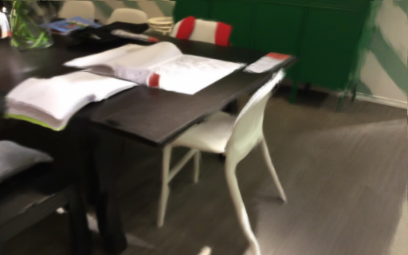
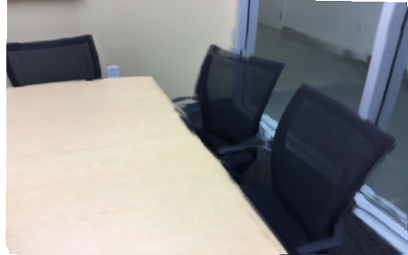
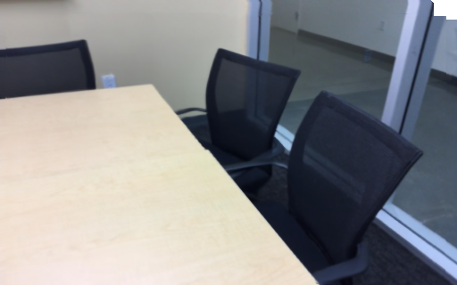
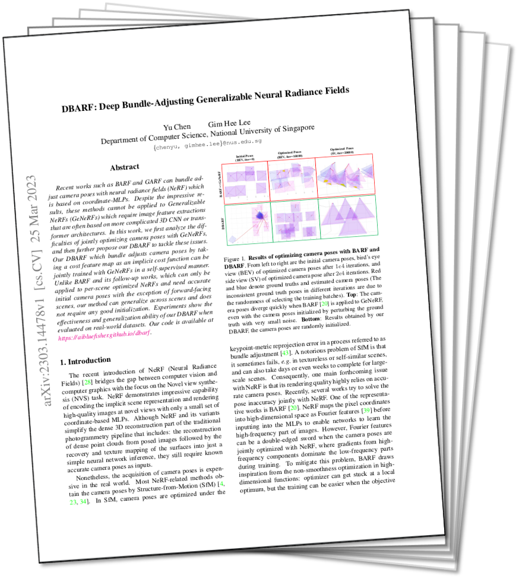

Recent works such as BARF and GARF can bundle adjust camera poses with neural radiance fields (NeRF) which is based on coordinate-MLPs. Despite the impressive results, these methods cannot be applied to Generalizable NeRFs (GeNeRFs) which require image feature extractions that are often based on more complicated 3D CNN or transformer architectures. In this work, we first analyze the difficulties of jointly optimizing camera poses with GeNeRFs, and then further propose our DBARF to tackle these issues. Our DBARF which bundle adjusts camera poses by taking a cost feature map as an implicit cost function can be jointly trained with GeNeRFs in a self-supervised manner. Unlike BARF and its follow-up works, which can only be applied to per-scene optimized NeRFs and need accurate initial camera poses with the exception of forward-facing scenes, our method can generalize across scenes and does not require any good initialization. Experiments show the effectiveness and generalization ability of our DBARF when evaluated on real-world datasets.

 Abstract
Abstract
Qualitative Analysis on LLFF dataset
Hover over image to move the zoomed in patch; Click on ground-truth image to switch to a different image
Rendering Results on LLFF dataset
We compare our novel view synthesis results with IBRNet, where our network is trained without ground-truth camera poses.
| image | depth | image | depth |
| IBRNet | DBARF (ours) |
| IBRNet | DBARF (ours) |
Qualitative Analysis on ScanNet dataset




Code
The code is hosted on GitHub (PyTorch).
Details to download the datasets are also described in the GitHub page.
Details to download the datasets are also described in the GitHub page.
Publications

CVPR 2023 paper: [ link ]
arXiv preprint: https://arxiv.org/abs/2104.06405
BibTex:
@inproceedings{chen2023dbarf,
title={DBARF: Deep Bundle-Adjusting Generalizable Neural Radiance Fields},
author={Yu Chen and Gim Hee Lee},
booktitle={IEEE Conference on Computer Vision and Pattern Recognition ({CVPR})},
year={2023}
}
title={DBARF: Deep Bundle-Adjusting Generalizable Neural Radiance Fields},
author={Yu Chen and Gim Hee Lee},
booktitle={IEEE Conference on Computer Vision and Pattern Recognition ({CVPR})},
year={2023}
}